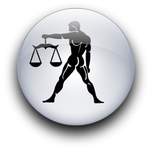

Женщина Стрелец и Мужчина Весы
-


Женщина-Стрелец, разочарованная в мужчинах и не забывшая прежних обид, может найти исцеление в дружеской заботе и нежной любви, мужчины-Весов.
Но рай, скорее всего, наступит не сразу. Прежде всего надо понять, как далеко это должно зайти? Может, пусть это так и останется одним волшебным мгновением, не осознанным до конца чудом? Если выяснится, что все гораздо серьезнее, возникает новая проблема: надо ли им жить вместе, ведь любовь должна пройти проверку временем, и если да, то тайно или открыто - как?
А может, просто сразу же пожениться и покончить со всеми колебаниями?
Если он женат или она замужем? Или оба они разведены, и нечего беспокоиться, что их любовь послужит причиной разрыва с кем-то другим, но тогда стоит ли рисковать и второй раз вступать в брак, если первый был такой серьезной и печальной ошибкой?
Она, скорее всего, еще не была замужем. Конечно, всегда есть исключения, но, как правило, женщины-Стрельцы не спешат связать себя узами брака так рано, как это бывает с мужчинами-Весами. Но романы у нее были наверняка - Стрельцы одолеваемы любопытством и страстью к экспериментам в области любви так же, как и в любой другой сфере жизни. Быть ее самой первой любовью - это восхитительное, трогательное переживание, которое запомнится на всю жизнь, но это не всегда приводит к желаемому результату - постоянству. Ее сердцу нужен опыт...
Дело не в том, что она легкомысленно относится к любви. Просто ее наивные, доверчивые, так широко открытые глаза не всегда умеют увидеть реальность человеческой природы. Каждый раз, когда она любит, она всем сердцем верит, что двое людей впервые переживают подобное чудо. Она искренне хочет, чтобы ее любовь была настоящей и вечной, как это бывает в сказках. В этом отношении она слегка отличается от среднего мужчины-Стрельца, для которого постоянство - не самое главное.
Мужчина-Весы, влюбленный в эту очаровательную и трогательную женщину-Стрельца, должен знать, что, благодаря управлению Юпитера, актерское мастерство у нее в крови. Многие Стрельцы - профессиональные актеры или актрисы (так же, как многие Весы - адвокаты, судьи, писатели или владельцы книжных магазинов). Даже если она не имеет никакого отношения к сцене, все равно в ней есть нечто актерское, и хотя она не всегда это осознает, вполне способна на блестящую игру, заслуживающую наград. Но за которую, однако, жизнь никогда не даст ей Оскара. Она любит, она доверяется, она верит, она прилагает весь свой пламенный идеализм и всю решимость и - срывается вниз, и нет никакой сетки, чтобы поймать ее, потому что Стрелец скорее сделает все ставки на счастье, чем обременит себя страховкой или гарантиями. Но кем бы она ни была - секретаршей, ученым или певицей, она притворится, что ей совсем не больно, благодаря своему драматическому таланту и веселой улыбки.
Когда ее юпитерианская веселая улыбка замыкается на ослепительной улыбке мужчины-Весов, комната, в которой они находятся, не нуждается ни в каком искусственном освещении: эти двое осветят ее так, что полночь покажется днем.
Если бы когда-нибудь Весы и Стрелец попытались ограбить банк (вряд ли, конечно, потому что Весы не смогли бы решить, где припарковать машину для побега, а Стрелец споткнулась бы о сумку с деньгами и уронила пистолет, но если бы они все же попытались), они просто ослепили бы кассира улыбкой, и он, скорее всего, сам отдал бы им деньги, улыбнулся в ответ и радостно помахал на прощание. Это заразительная, неотразимая парочка (и особенно друг для друга).
Как только они решат все проблемы типа "нужно-нам-или-нет" и "когда-это-нужно-и-как-это-сделать", эти мужчина и женщина могут получить столько процентов счастья со своей любви, что им не понадобится грабить банк. У них есть все для того, чтобы превратить прекрасное мгновение в долговременную любовь. К тому же они будут не только любовниками, но и хорошими друзьями. В конце концов, именно это привлекло их друг к другу - совпадение целей и симпатий, общие идеалы, потребность в переменах и переживаниях. Все настоящие влюбленные - друзья, но не все влюбленные остаются друзьями, утратив романтическое чувство. Весы и Стрелец, наверное, останутся.
Дружба всегда добавляет что-то новое к чувствам мужчины и женщины и только усиливает их сексуальные переживания. Так, именно дружба подарит Весам и его любимой-Стрельцу подлинную нежность. Прекрасно, когда секс между людьми радостен, открыт и свободен. Физическая близость с человеком, которого вы действительно любите и который к тому же еще и ваш друг, заставляет вас почувствовать себя отдохнувшим, чистым, как бы вымытым.
Любовь, дарованная Юпитером и Венерой, всегда в каком-то смысле особенная. Чудо любви делает их добрее, мягче, щедрее, помогает яснее разглядеть свои мечты. И тогда появляется желание обнять весь мир, а не только друг друга, и страх перед будущим кажется, глупым, и все самое невероятное становится возможным... Весы и Стрелец лучше, чем многие другие, умеют выразить эти чувства друг другу словами.
Эти двое знают, как разговаривать друг с другом. Они могут ссориться, как и любая другая пара, даже, может быть, чаще и сильней, но они открыто обсуждают свои обиды или ревность, сексуальные желания, финансовые проблемы и взаимные жалобы. И порой просто в разговоре все решается само собой. Учитывая то, что Весы управляют взвешенными суждениями, а Стрелец - философией, некоторые из их бесед могут привести к очень серьезным, почти сократовским высказываниям по поводу человеческих взаимоотношений. Часто разногласия между Весами и Стрельцом кончаются смехом и любовью.
Иногда она слишком резко указывает ему на его недостатки. Например, на то, что он работает по вечерам, оставляя ее одну. Это может так рассердить и обидеть его, что он задержится нарочно, чтобы показать ей, кто у них главный. Ее порой раздражает его нерешительность, потому что она более импульсивна и быстрей понимает, чего хочет. Она может заявить, что он должен стать решительней, иначе она уйдет от него. Он, конечно, скажет, что она несправедлива, и отправится без нее куда-нибудь на вечеринку, где как следует заест или запьет свои неприятности, чтобы вновь обрести равновесие. Ему нужен хорошо налаженный, тихий, мирный и спокойный дом, а она нужную домашнюю работу презирает (хотя может быть отличной хозяйкой). Его раздражает, что телевизор включен слишком громко, а в кухне беспорядок. А занавески вообще не подходят к покрывалу, так зачем же она их купила? На что она ответит, что не собирается всю свою жизнь быть его горничной. Но потом они еще раз обсудят, это, и между ними восстановится гармония.
Его физическое присутствие оказывает удивительно успокаивающее действие на ее непоседливую натуру, и ему очень нравится учить ее быть терпеливой. А ее физическое присутствие волнует его так, что он начинает забывать некоторые вещи, например, свою мелочную нерешительность.